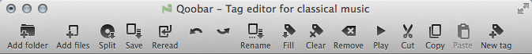

Toolbar

- Add folder... - adds a directory with all its subdirectories ⌘O
- Add files... - adds a file / files ⇧⌘O
- Split disc - splits an image of a musical disc (*.ape, *.flac, *.wav) by a cue sheet
- Save - saves all changes in the current tab ⌘S
- Reread tags - rereads tags in selected files and undoes all unsaved changes
- Undo / Redo last operation ⌘Z / ⇧⌘Z
- Rename files... - renames / moves files according to its tags ⌘R
- Fill tags... - fills tags from file name, tags or Internet ⌘F
- Clear all tags - deletes all tags in the selected files
- Clear the list - clears the current tab ⌘Del
- Play selected - plays selected files in an external player ⌘P
- Cut - cuts selected tags of selected files ⌘X
- Copy - copies selected tags of selected files ⌘C
- Paste - pastes copied tags ⌘V
- Add new tag... - adds a new tag to selected files ⌘N
You can customize the toolbar by right-clicking on it.
© 2009-2016 Alex Novichkov